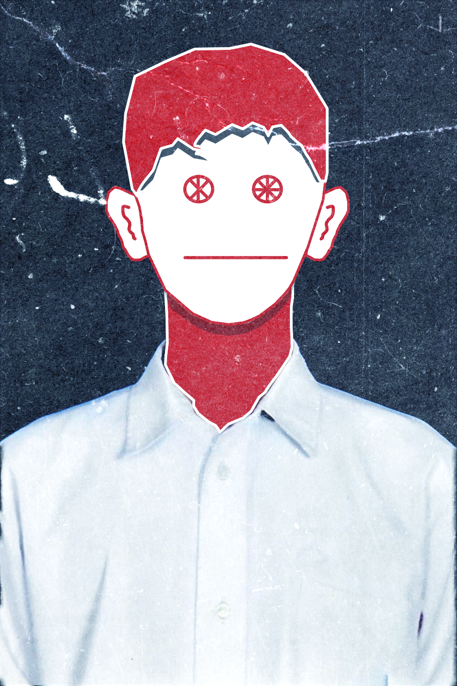

Halo, Saya Andhika
Mahasiswa Sistem Informasi
Universitas Pendidikan Ganesha
Saya menempuh seluruh jenjang pendidikan dasar hingga menengah di Kupang. Dimulai di SDK Santa Maria Assumpta Kupang untuk tingkat sekolah dasar, kemudian berlanjut ke SMPK Santa Maria Assumpta Kupang pada jenjang sekolah menengah pertama. Setelah itu, saya menyelesaikan pendidikan sekolah menengah atas di SMAK Giovanni Kupang. Saya mengisi waktu luang dengan bermain game, membaca komik, serta menonton film.
Kupang / Bali